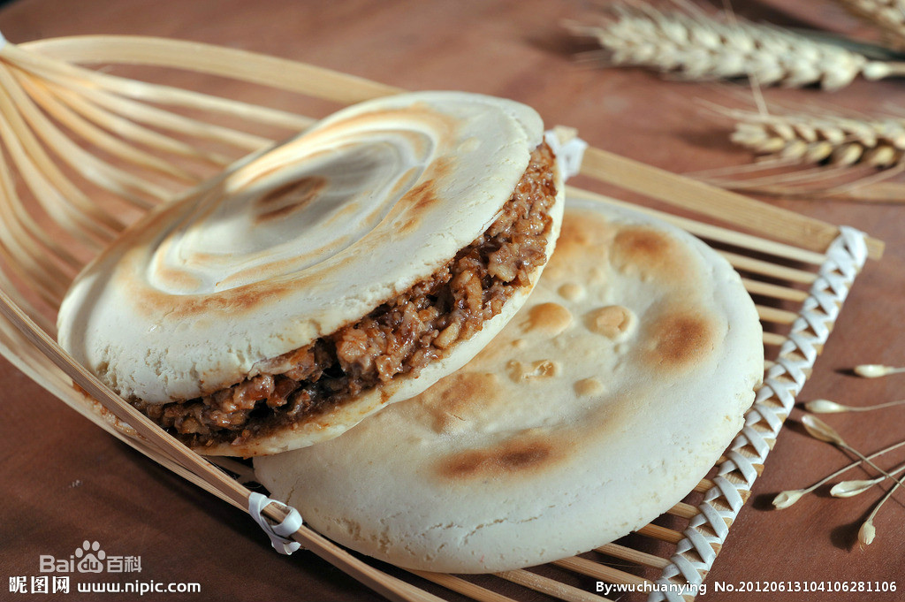

教学班级：通信1902
姓名：孙仕龙
学号：201916180230
自我介绍：
出生在2000年的普通男孩，平时在看动漫之外，也喜欢唱歌，那是我大多是闲暇之余干的事情， 励志在学习一些乐理知识后，做出一些自己的歌曲，成为一个称职的音乐人！为了梦想，冲！家乡美食介绍：
我的家乡在陕西汉中，就是当年刘邦称王的地方，美食数不胜数，在这里我就简单介绍几个。当然，提到陕西，无论是哪，都会有比较正宗的肉夹馍，当腊汁淋上馍后，飘香四溢。
其次，面皮对于我们当地人来说，无论早中晚餐，都是必不可少的。软糯香辣是汉中面皮的主要味型及口感。因为是大米制作，热食特别软糯。